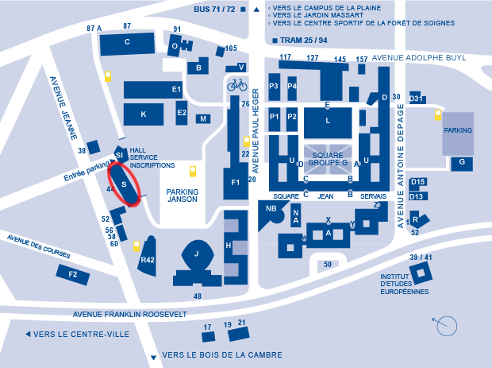

Location of the meeting
The talks will be held in the Dupréel Auditorium on the first floor of building S on the Solbosch campus of the Université libre de Bruxelles. The building is most easily accessible from Avenue Jeanne.

Lunch
Lunch will be offered at the conference venue on Wednesday May 20 and Thursday May 21.
There is also a good choice of restaurants in the area of the Cimetière d'Ixelles at walking distance from the conference venue (see map).
Conference dinner
The conference dinner will take place on Thursday May 21 at Bozar Brasserie. The easiest way to get there is by bus: take bus 71 destination De Brouckère, step out at Bozar and walk back a few meters to take the first street on your left hand side.
By metro, the Brasserie is most easily accessed from the stop Gare Centrale of lines 1 and 5, exit "Rue Montagne du Parc".
While in Brussels
Public Transport
Public transport in Brussels is run by the STIB/MIVB. Their website allows you to look up timetables and plan your trips. The routing can also be done in Google Maps by selecting the public transport option.
Standard STIB tickets can be used to take the metro, bus/night-bus and tram, and they are valid within the whole of the Brussels-Capital Region (except for the Airport line). Tickets must be validated at each boarding and remain valid during 1 hour.
Transport tickets can be purchased at any metro station as well as by the main bus/tram stops (at the GO vending machines). Most supermarkets and newspaper shops (showing this logo) also sell STIB tickets. The most favourable and simple option is probably to purchase 10-journey (14 Euros) or 5-journey (8 Euros) "JUMP" tickets.
Note that in addition to the STIB, there are two other public transport companies operating within Brussels: TEC (operating in the Region of Wallonia) and De Lijn (operating in the Region of Flanders). These companies only operate buses and in principle you will not need to use any of them within Brussels.
Tourism
The official tourist information website of the Brussels-Capital Region can be found on Visitbrussels.be. A cultural agenda for the City of Brussels can be found on Brussels.be. Here are some other websites providing information to visitors:
- BrusselsLife.be
- USE-IT.be, a touristic map made by locals
- opt.be, the visitor center for Wallonia-Brussels
- VisitFlanders.com, the visitor center for Flanders